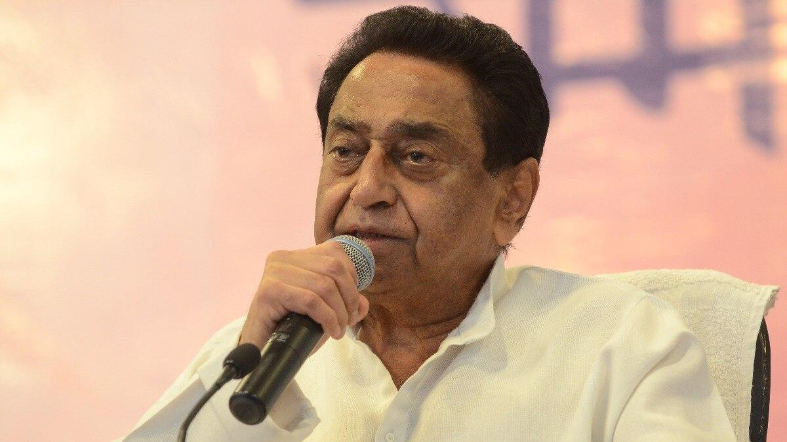

The Guiding Principles of a Lifetime in Public Service
Foundation
Rooted in secular democracy, pluralism, and the unwavering belief that India's strength lies in its diversity.
At the very heart of Kamal Nath's political philosophy lies an unshakeable commitment to secular democracy -- the idea that India's democratic republic must remain a space where every citizen, regardless of faith, caste, language, or ethnicity, enjoys equal dignity and equal opportunity. He has consistently argued that secularism is not merely a constitutional provision but the civilizational ethos of India, a nation that has for millennia absorbed and celebrated difference rather than suppressing it.
Throughout his decades in public life, Kamal Nath has championed the view that the Indian state must maintain an equidistant relationship with all religions, ensuring that governance is driven by rational policy rather than sectarian impulse. He has spoken passionately in Parliament and on public platforms about the dangers of communal polarization, warning that the politics of division undermines the very fabric of the nation. For him, the protection of minority rights is not a concession -- it is a constitutional duty and a moral imperative.
Kamal Nath's ideological roots trace back to the Nehruvian tradition -- a tradition that envisioned India as a modern, scientifically tempered, industrially advanced nation where the fruits of development are shared equitably. Yet he has never been a doctrinaire ideologue. He recognizes that the Nehruvian framework must evolve to meet the realities of a globalized, technologically transformed world. His vision is one of progressive pragmatism: retaining the core commitment to social justice and state responsibility while embracing market mechanisms, private enterprise, and global trade as instruments of growth.
This synthesis is evident in his approach as Commerce and Industry Minister, where he negotiated India's interests at the World Trade Organization while simultaneously advocating for protections for vulnerable domestic sectors. He has argued that liberalization without safeguards is recklessness, but protectionism without openness is stagnation. The middle path -- strategic engagement with the global economy while building robust domestic capabilities -- is his defining economic philosophy.
Kamal Nath regards the Constitution of India as a living, sacred document -- the collective covenant of a diverse people who chose to govern themselves through reason, justice, and law. He has repeatedly emphasized the importance of strengthening democratic institutions: an independent judiciary, a free press, an empowered Parliament, and an accountable executive. He views any erosion of institutional autonomy as an existential threat to democracy itself.
As a lifelong member of the Indian National Congress, Kamal Nath has been a torchbearer of the party's founding ideology: that India is a pluralistic civilization and its politics must reflect that plurality. He has argued that the Congress movement, from the freedom struggle onward, has represented the broadest possible coalition of India's diverse communities -- a big-tent philosophy that seeks to unite rather than divide, to include rather than exclude.
Inclusive growth and social justice are not afterthoughts in Kamal Nath's philosophy -- they are prerequisites for genuine progress. He has consistently maintained that economic development without equity is hollow, that GDP growth that does not reach the poorest households is a statistical illusion rather than a national achievement. His governance model prioritizes affirmative action, reservation policies, and targeted welfare as instruments of historical justice.
"Democracy is not merely a system of government -- it is a way of life. It demands that we listen to voices we disagree with, protect rights we may not exercise, and build institutions that outlast our own ambitions."
-- Kamal Nath, on the Floor of Parliament
The Big Picture
India as a global economic power, a knowledge economy, and a leader in the multilateral world order -- without leaving a single citizen behind.
"The 21st century belongs to India -- not because of our size alone, but because of our capacity to innovate, to adapt, and to lead with the wisdom of an ancient civilization meeting the demands of a modern world."
-- Kamal Nath, from "India's Century"
Kamal Nath has long envisioned India not as a passive participant in the global economy but as a shaping force. His tenure as Commerce Minister was defined by a bold assertion of India's interests on the world stage -- from the Doha Round negotiations at the WTO to bilateral trade agreements that sought to open markets for Indian goods while protecting the livelihoods of Indian farmers and small manufacturers. He believes that India's sheer demographic weight, combined with its growing technological capabilities and entrepreneurial energy, positions it to become one of the three or four most influential economies on the planet.
However, his vision of India as a global power is not one of aggressive nationalism but of responsible leadership. He has argued for India to play a central role in multilateral institutions -- the United Nations, the WTO, the G20 -- not merely to advance its own interests but to advocate for the developing world as a whole. India's voice, he believes, should be the voice of the Global South: demanding fair trade, equitable climate agreements, and a reformed international financial architecture.
One of the most persistent themes in Kamal Nath's public discourse is the imperative of balanced development. He has warned against the "shining India" narrative that celebrates urban affluence while ignoring rural distress. His vision insists that true national progress requires bridges between the gleaming metros and the dusty villages -- better roads, reliable power, digital connectivity, quality healthcare, and modern educational institutions reaching every tehsil and block.
This is not merely rhetoric. As Chief Minister of Madhya Pradesh, he launched ambitious rural infrastructure programs, invested in farm-to-market roads, expanded irrigation coverage, and worked to bring institutional credit to farmers who had been trapped in cycles of debt to informal moneylenders. His governance demonstrated the conviction that rural India is not a burden to be managed but a powerhouse waiting to be unleashed.
Kamal Nath's book, India's Century, articulates a comprehensive framework for how India can claim its rightful place in the 21st-century global order. The book argues that India's competitive advantages -- a young population, a democratic polity, a tradition of intellectual inquiry, and an increasingly sophisticated technological base -- position it uniquely among emerging economies. But realizing this potential requires deliberate, strategic action: massive investment in education and skills, radical improvement in physical and digital infrastructure, reform of governance structures, and a foreign policy that is confident but not confrontational.
Kamal Nath has repeatedly emphasized that India's greatest resource is not its minerals, its farmland, or its coastline -- it is its people. The transition from a resource-based economy to a knowledge economy, he argues, requires a revolution in education: not just expanding enrollment but transforming the quality of instruction, fostering critical thinking and creativity, and linking the academy to industry. His vision encompasses world-class universities, vocational training centers that produce job-ready graduates, and a research ecosystem that generates patentable innovations rather than merely publishing papers.
Building the Nation
Infrastructure-led growth, farmer-first policy, digital transformation, and sustainable development as interdependent pillars of national progress.
Kamal Nath regards infrastructure as the skeleton upon which the body of a modern economy is built. Roads, railways, ports, airports, power grids, and digital networks are not luxuries -- they are prerequisites for productive activity. His approach emphasizes not just building infrastructure but building it strategically: connecting hinterlands to markets, linking industrial clusters to transport corridors, and ensuring that remote and tribal areas are not left in perpetual isolation. During his tenure as Union Minister for Road Transport and Highways, India witnessed one of its most ambitious phases of highway construction, transforming connectivity across the nation.
Agriculture remains the livelihood of the majority of India's population, and Kamal Nath has been unequivocal: no development model is viable if it neglects the farmer. His farmer-first approach encompasses assured minimum support prices, expanded institutional credit, modern irrigation systems, crop insurance, and investment in post-harvest infrastructure to reduce wastage. As Chief Minister, he launched the Jai Kisan Fasal Rin Maafi Yojana -- one of India's largest farm loan waiver programs -- providing relief to millions of distressed farming families in Madhya Pradesh.
While championing the farmer, Kamal Nath recognizes that industrialization is essential for job creation and economic diversification. His vision is one of industrial development with social responsibility: factories that employ local workers, adhere to environmental norms, and contribute to community welfare. He has advocated for special economic zones, industrial corridors, and public-private partnerships that leverage government land and infrastructure with private capital and management expertise. The key, he insists, is ensuring that industrial growth does not come at the expense of the displaced or the dispossessed.
Kamal Nath has been an early and enthusiastic advocate of digital transformation as a tool for governance, service delivery, and economic empowerment. He envisions a digitally connected India where a farmer in a remote Madhya Pradesh village can access weather forecasts, market prices, and government subsidies on a smartphone; where a student in a tribal hamlet can attend a world-class lecture through a digital classroom; and where a small entrepreneur can access a national market through an e-commerce platform. Digital infrastructure, he argues, is the great equalizer -- it can bridge the gap between urban privilege and rural deprivation more rapidly than any physical infrastructure program.
For Kamal Nath, education is not merely a social expenditure -- it is the single most productive investment a nation can make. His educational philosophy emphasizes universal access, quality instruction, and relevance to the economy. He has pushed for expanded primary schooling infrastructure, mid-day meal programs that keep children in school, scholarship schemes for first-generation learners, and technical training institutes that equip young people with marketable skills. Education, he believes, is the pathway out of poverty, the engine of social mobility, and the foundation of a competitive national economy.
Kamal Nath has consistently argued that development and environmental responsibility are not adversaries -- they are allies. Reckless exploitation of natural resources may generate short-term growth, but it destroys the ecological base upon which all future prosperity depends. His governance model integrates environmental impact assessments into infrastructure planning, promotes renewable energy, protects forest cover, and invests in clean water and sanitation. Sustainability, in his vision, is not a constraint on development but a condition for its permanence.
"Infrastructure is not about concrete and steel alone -- it is about connecting aspirations. Every road we build connects a village to hope. Every school we open is a bridge to the future. Every hospital we establish is a promise that the state cares."
-- Kamal Nath, on Development Philosophy
People First
A lifelong commitment to uplifting the marginalized, empowering women, developing youth, and ensuring healthcare reaches every citizen.
Kamal Nath's political career has been defined, in large measure, by his commitment to the upliftment of India's historically marginalized communities -- the Scheduled Castes, Scheduled Tribes, Other Backward Classes, and religious minorities who have borne the brunt of centuries of discrimination. He views affirmative action not as a temporary concession but as a structural necessity until genuine social equality is achieved. His governance has prioritized scholarships for Dalit and Adivasi students, reserved posts in government employment, targeted poverty alleviation schemes, and legal protections against discrimination and atrocity.
He has been particularly vocal about the dignity dimension of social justice. It is not enough, he argues, to provide economic benefits to marginalized communities -- the state must also work to dismantle the social prejudices, cultural hierarchies, and institutional biases that perpetuate their exclusion. True empowerment is about dignity as much as it is about income.
Chhindwara, Kamal Nath's constituency, is home to a significant tribal population, and his engagement with tribal communities is not abstract -- it is deeply personal and immediate. He has championed land rights for tribal families, fought against the displacement of Adivasi communities by industrial and mining projects, and invested in schools, health centers, and roads in tribal-dominated areas. He has advocated for the implementation of the Forest Rights Act, which grants tribal communities legal ownership of the forest land they have cultivated for generations.
His vision for tribal welfare goes beyond protective legislation. He envisions tribal communities as active participants in the development process -- not as passive beneficiaries of government largesse but as empowered citizens who shape the policies that affect their lives. Community-level governance through gram sabhas, protection of tribal cultural heritage, and integration of traditional knowledge into development planning are all central to his approach.
Kamal Nath has been a consistent advocate for women's empowerment -- not as a token political gesture but as a fundamental prerequisite for national progress. He has argued that no society can advance when half its population is denied education, economic opportunity, and physical security. His governance initiatives have included expanded access to girls' education, self-help group programs that provide women with credit and entrepreneurial support, stronger enforcement of laws against domestic violence and sexual harassment, and reservation for women in local governance bodies. He has stated unequivocally that women's empowerment is not a women's issue -- it is an India issue.
With India possessing the world's largest youth population, Kamal Nath sees youth development as the most critical challenge and the greatest opportunity facing the nation. His approach encompasses skill development programs aligned with industry demands, startup incubation and entrepreneurship support, expansion of higher education capacity, and policies that incentivize private sector job creation. He has warned that a "demographic dividend" can quickly become a "demographic disaster" if millions of young Indians remain unemployed, unskilled, and disillusioned. Investing in youth is investing in India's future.
Kamal Nath regards accessible, affordable healthcare as a fundamental right -- not a privilege reserved for those who can afford private hospitals. His healthcare philosophy prioritizes strengthening the public health system: building and staffing primary health centers in rural and tribal areas, ensuring availability of essential medicines, expanding insurance coverage for the poor, and investing in preventive healthcare and disease surveillance. He has argued that a healthy workforce is a productive workforce, making healthcare investment not just a moral duty but an economic imperative. His governance saw significant expansion of healthcare infrastructure in Madhya Pradesh.
"The measure of a civilization is not the height of its tallest buildings but the depth of its compassion for its most vulnerable citizens. A nation that forgets its poorest has forgotten its purpose."
-- Kamal Nath, on Social Justice
Economic Framework
Free and fair trade, protection of domestic interests, MSME empowerment, and a balanced approach to liberalization that serves all of India.
As India's longest-serving Commerce and Industry Minister, Kamal Nath became the country's foremost advocate for free and fair trade on the world stage. He distinguished sharply between "free trade" -- which often served the interests of developed nations -- and "fair trade" -- which would level the playing field for developing economies. At the WTO ministerial conferences in Cancun and Hong Kong, he emerged as one of the most forceful voices demanding that trade rules reflect the realities of developing nations: their need for policy space, their vulnerability to agricultural dumping, and their aspiration for industrial development.
His position was never one of blanket protectionism. He welcomed foreign investment, encouraged Indian firms to compete globally, and negotiated trade agreements that opened new markets for Indian exports. But he insisted that trade liberalization must be calibrated and reciprocal -- that India should not open its markets to foreign competition in sectors where its own producers lacked the scale, technology, or infrastructure to compete on equal terms. This nuanced approach earned him international recognition as a skilled negotiator and a champion of the developing world.
Kamal Nath's approach to international trade has always been informed by a keen awareness of its domestic consequences. He has been particularly concerned about the impact of trade liberalization on Indian agriculture, where millions of smallholder farmers compete against heavily subsidized producers in the developed world. His advocacy for the "Special Products" and "Special Safeguard Mechanism" provisions at the WTO was driven by this concern -- ensuring that developing countries retain the right to protect their most vulnerable sectors from import surges.
Beyond agriculture, he has championed policies that protect India's nascent manufacturing sector, its small-scale industries, and its service sector workers from unfair competition. His vision is one of strategic integration into the global economy: engaging where India has competitive advantage, protecting where it faces structural disadvantage, and investing systematically in building the capabilities that will make India competitive across all sectors over time.
Kamal Nath has long recognized that Micro, Small, and Medium Enterprises (MSMEs) are the true backbone of the Indian economy -- generating employment, driving innovation, and reaching into every corner of the country. He has pushed for easier access to credit for MSMEs, simplified regulatory compliance, technology upgradation support, and preferential procurement policies. He has argued that while India rightly celebrates its global IT firms and billion-dollar startups, it must not neglect the millions of small workshops, family enterprises, and local manufacturers that provide the bulk of non-agricultural employment.
Kamal Nath has been a strong proponent of creating an investment-friendly environment in India -- not through a race to the bottom on regulations and labor protections, but through genuine improvements in the ease of doing business. This means faster clearances, transparent procedures, reliable infrastructure, predictable tax regimes, and a judicial system that enforces contracts efficiently. He has argued that the quality of governance is the most important determinant of investment flows -- investors come where they trust the system, not where they are offered the lowest wages or the most lax environmental standards.
Kamal Nath's economic philosophy occupies a distinctive middle ground between laissez-faire liberalism and statist dirigisme. He has supported the post-1991 liberalization of the Indian economy but has consistently argued for its implementation to be gradual, calibrated, and attentive to social consequences. Markets, he believes, are powerful instruments for creating wealth, but they must be regulated to prevent monopoly, exploitation, and environmental destruction. The state must remain an active participant in the economy -- as regulator, investor, and guarantor of social safety nets -- even as it encourages private enterprise and competitive markets.
"Trade must be a bridge, not a weapon. When we negotiate at the global table, we carry the aspirations of every farmer, every artisan, every small entrepreneur who looks to the global market as an opportunity -- not a threat."
-- Kamal Nath, at the WTO Ministerial Conference
Serving the People
Transparent, accountable, people-centric governance that empowers local institutions and harnesses technology for responsive administration.
Kamal Nath believes that transparency and accountability are not optional virtues in governance -- they are structural requirements for a functioning democracy. He has been a strong supporter of the Right to Information Act, which he views as one of independent India's most transformative pieces of legislation. He has advocated for proactive disclosure of government information, social audits of public programs, and grievance redressal mechanisms that give citizens a direct voice in holding the state accountable. Governance in his view must be conducted in the open -- not behind closed doors. When citizens can see how decisions are made, how money is spent, and how programs are implemented, the quality of governance improves automatically.
The hallmark of Kamal Nath's governance philosophy is its relentless focus on the citizen. He has pushed for a transformation in the culture of Indian bureaucracy -- from a colonial-era mindset of authority and control to a service-oriented approach that treats every citizen as a customer deserving of respect, efficiency, and responsiveness. His administrative reforms have included single-window clearances, time-bound service delivery guarantees, and performance metrics for government departments tied to citizen satisfaction. The question he asks of every policy and program is simple: does this make life better for ordinary people?
Kamal Nath has been a consistent advocate for decentralization -- transferring power, resources, and responsibility from the center and the state capitals to the local level. He has championed the strengthening of panchayati raj institutions, arguing that governance is most effective when it is closest to the people it serves. Village-level planning, participatory budgeting, and community management of local resources are central to his vision. He has argued that India's democratic project will remain incomplete until the third tier of government -- the panchayats and municipalities -- is genuinely empowered with funds, functions, and functionaries.
Kamal Nath has enthusiastically embraced technology as a tool for improving governance -- from e-governance platforms that enable citizens to access services online to data analytics that help government identify problems and track outcomes. He has championed digital land records, online tracking of government applications, and mobile-based citizen feedback systems. Technology, he argues, can make governance more efficient, more transparent, and more accessible -- breaking down the barriers of distance, bureaucratic complexity, and corruption that have historically kept citizens at the mercy of unresponsive institutions. However, he also cautions that technology is a tool, not a substitute for political will and administrative commitment.
"Good governance is not about grand announcements and press conferences. It is about the quiet, unglamorous work of ensuring that the schoolteacher shows up, the hospital has medicines, the road has no potholes, and the ration shop is not corrupt. Governance is in the details."
-- Kamal Nath, on Administrative Philosophy
Guardianship of Nature
From Narmada river conservation to forest preservation, a commitment to sustainable development that honors India's ecological heritage.
The Narmada -- Madhya Pradesh's lifeline -- holds a special place in Kamal Nath's environmental consciousness. He has been a vocal advocate for the conservation and rejuvenation of the Narmada river system, recognizing that the health of this great river is inextricably linked to the well-being of millions of people who depend on it for drinking water, irrigation, and livelihood. His approach to Narmada conservation combines traditional reverence for the river with modern scientific methods: plantation drives along the riverbanks to prevent erosion, regulation of industrial effluents, protection of the catchment forests, and community-based river monitoring programs.
He has spoken passionately about the need to treat rivers not as drainage channels for industrial waste but as living ecosystems that sustain human civilization. The degradation of India's rivers, he has warned, is an environmental crisis with profound social and economic consequences -- threatening water security, agricultural productivity, and public health.
Madhya Pradesh is one of India's most forested states, and Kamal Nath has been a steadfast guardian of this ecological wealth. He has resisted pressures to divert forest land for mining and industrial projects, has strengthened the Forest Department's enforcement capabilities, and has promoted community-based forest management through Joint Forest Management Committees. He recognizes that forests are not just timber reserves -- they are carbon sinks, biodiversity hotspots, water recharge zones, and the ancestral homes of millions of tribal people.
His forest conservation approach is informed by the understanding that protecting forests and promoting development are not contradictory goals. Eco-tourism, non-timber forest products, medicinal plants, and sustainable forestry can provide livelihoods to forest-dependent communities while maintaining the ecological integrity of the forests. This is the essence of his sustainable development philosophy: finding pathways that serve both people and the planet.
Kamal Nath's environmental vision aligns closely with the United Nations Sustainable Development Goals. He has advocated for India to take ambitious targets on renewable energy, clean water, sustainable agriculture, and climate change mitigation -- not merely as international commitments but as domestic policy priorities. He has argued that India, as one of the world's most climate-vulnerable nations, has a greater stake than most in achieving the SDGs. Climate action, in his view, is not a luxury for rich nations -- it is a survival imperative for developing nations that face the greatest risks from rising temperatures, changing rainfall patterns, and extreme weather events.
Kamal Nath has championed the expansion of solar, wind, and other renewable energy sources as both an environmental necessity and an economic opportunity. He has argued that India's abundant sunlight, wind corridors, and biomass resources give it a natural advantage in the green energy transition. Investment in renewable energy, he believes, can create millions of new jobs, reduce India's dependence on imported fossil fuels, improve energy security, and position the country as a global leader in clean technology. His vision encompasses rooftop solar programs for rural households, solar-powered irrigation pumps for farmers, wind energy parks, and the gradual decarbonization of the industrial sector.
Madhya Pradesh, known as the "Heart of India," possesses some of the richest forest ecosystems on the subcontinent. Kamal Nath has consistently treated these forests not merely as economic assets but as civilizational heritage -- home to tigers, leopards, elephants, and hundreds of species of birds and plants. His support for tiger conservation, national park management, and wildlife corridors reflects a deep ecological sensibility that goes beyond political calculation.
The transition to clean energy, in Kamal Nath's vision, is not about imposing austerity but about embracing innovation. Solar panels on every government building, energy-efficient lighting in every village, electric mobility in urban centers, and biogas plants converting agricultural waste into energy -- these are the building blocks of a green economy that serves both ecological responsibility and economic growth. He sees India as a potential world leader in this transition.
Water security is perhaps the most urgent environmental challenge facing India, and Kamal Nath has placed it at the center of his governance agenda. Rainwater harvesting, watershed management, revival of traditional water bodies, efficient irrigation technologies, and strict regulation of groundwater extraction are all components of his water security strategy. He has warned that water scarcity, if not addressed systematically, will become the defining crisis of 21st-century India -- more dangerous than any external threat.
"We do not inherit the earth from our ancestors -- we borrow it from our children. Every forest we destroy, every river we pollute, every species we drive to extinction is a theft from the future. Development that destroys the environment is not development at all."
-- Kamal Nath, on Environmental Stewardship
Looking Ahead
Mentoring the next generation, building lasting institutions, and ensuring the continuing relevance of a vision shaped by five decades of service.
One of the most enduring aspects of Kamal Nath's legacy is his commitment to mentoring the next generation of political leaders. He has invested time and energy in nurturing young politicians within the Congress party and within the broader political ecosystem, sharing the lessons of his experience while encouraging fresh thinking and new approaches. He believes that political leadership is not a possession to be hoarded but a capability to be multiplied. The true test of a leader, he has said, is not what he achieves in office but what legacy he leaves behind -- and the leaders he develops who will carry the work forward.
Kamal Nath's career reflects a deep commitment to building and strengthening institutions -- because institutions, not individuals, are the foundation of enduring governance. Whether strengthening the road transport infrastructure of the nation, building trade negotiation capabilities at the Commerce Ministry, or establishing governance systems in Madhya Pradesh, his focus has always been on creating institutional capacity that endures beyond any single leader's tenure. He has argued that India's democratic resilience depends on the strength of its institutions -- and that weakening institutions for short-term political advantage is a betrayal of the national interest.
The principles that have guided Kamal Nath's political life -- secular democracy, inclusive development, social justice, environmental responsibility, and responsible global engagement -- are, if anything, more relevant today than when he first articulated them. In an era of rising inequality, ecological crisis, democratic backsliding, and geopolitical turbulence, his vision offers a framework for navigating complexity with wisdom, compassion, and strategic clarity. The challenge for the future is not to discover new principles but to implement the enduring ones with greater urgency, greater scale, and greater accountability.
"Political life is not about winning elections -- it is about the lives you improve, the injustices you correct, and the institutions you leave stronger than you found them. That is the only legacy worth building."
-- Kamal Nath, Reflections on Public Service
The Pillars
The unshakeable belief that India's democratic republic must protect the dignity and rights of every citizen, regardless of faith, caste, or community.
Economic development without equity is hollow. Growth must reach the poorest, and affirmative action must correct historical injustice.
Engaging with the global economy strategically -- opening where India is strong, protecting where it is vulnerable, and advocating for the developing world.
Development and ecological responsibility as allies, not adversaries. Protecting rivers, forests, and biodiversity for future generations.
Governance that begins and ends with the citizen -- transparent, accountable, responsive, and measured by the improvement it brings to ordinary lives.
Education, health, and skills as the most productive investments a nation can make -- the foundation of a knowledge economy and a just society.
"I have always believed that politics at its best is a noble vocation -- the art of making life better for those who have the least. Every decision I have taken, every negotiation I have entered, every policy I have championed has been guided by one simple question: will this help the people who need help the most?"
-- Kamal Nath